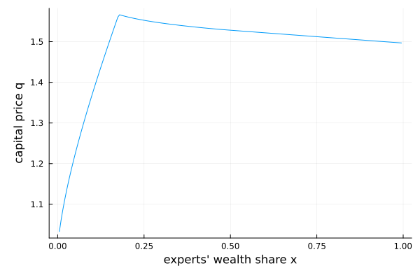

Brunnermeier–Sannikov (2014): a macroeconomic model with a financial sector
Experts and households both hold capital, but experts are more productive and can issue equity only if they retain at least a fraction $\chi$ of it — a skin-in-the-game constraint. The state $x$ is the experts' wealth share. The model has a crisis region (experts constrained, $\Psi < 1$) and a normal region ($\Psi = 1$); the capital price $q$ and the experts' capital share $\Psi$ are recovered with a root-find, sweeping $x$ from the lower boundary upward so each step reuses the previous $q$ to build $q_x$ by finite difference. That order-dependent sweep is why the model struct is mutable and carries q_old.
The model
The parameters:
using EconPDEs, Roots, Plots
Base.@kwdef mutable struct BrunnermeierSannikov
# Calibration uses Section 3.6 of the textbook chapter (the paper's r here appears to be a typo for ρH)
ρE::Float64 = 0.06 # experts' rate of time preference (discount rate)
ρH::Float64 = 0.05 # households' rate of time preference (discount rate)
γ::Float64 = 2.0 # relative risk aversion
ψ::Float64 = 0.5 # elasticity of intertemporal substitution
δ::Float64 = 0.05 # depreciation rate of capital
σ::Float64 = 0.1 # exogenous (fundamental) volatility of capital
κ::Float64 = 10.0 # investment adjustment-cost parameter
a::Float64 = 0.11 # experts' productivity (output per unit capital)
alow::Float64 = 0.03 # households' productivity (output per unit capital)
χlow::Float64 = 0.5 # minimum equity retention (skin-in-the-game floor)
q_old::Float64 = 1.0 # previous capital price q (carried across the sweep)
qx_old::Float64 = 0.0 # previous q_x (carried across the sweep)
Ψ_old::Float64 = 1.0 # previous experts' capital share Ψ (carried across the sweep)
endMain.BrunnermeierSannikovThe state space
We build the grid and the initial guess first, because they fix the names used everywhere else. The grid is a NamedTuple whose key is the state variable (x, the experts' wealth share); the guess is a NamedTuple whose keys are the unknown functions (pE, pH), holding one starting value at each grid point. These names are what reappear inside the equation below — e.g. pEx_up will be the forward finite difference of pE in x.
One state $x \in (0, 1)$ on 200 interior grid points. Because the sweep marches from the lower boundary upward, the grid spacing Δx and its minimum xmin are computed here and later passed into the model.
m = BrunnermeierSannikov()
xn = 200
stategrid = (; x = range(0, 1.0, length = xn+2)[2:(end-1)])
Δx = step(stategrid[:x])
xmin = minimum(stategrid[:x])
yend = (; pE = 9 .* ones(xn), pH = 10 .* ones(xn))(pE = [9.0, 9.0, 9.0, 9.0, 9.0, 9.0, 9.0, 9.0, 9.0, 9.0 … 9.0, 9.0, 9.0, 9.0, 9.0, 9.0, 9.0, 9.0, 9.0, 9.0], pH = [10.0, 10.0, 10.0, 10.0, 10.0, 10.0, 10.0, 10.0, 10.0, 10.0 … 10.0, 10.0, 10.0, 10.0, 10.0, 10.0, 10.0, 10.0, 10.0, 10.0])The equation
We now write the function encoding the equilibrium conditions. Following the package convention, it takes the current state (a grid point) and u — the local bundle holding each unknown and its finite-difference derivatives there — plus the grid spacing Δx and lower bound xmin, and returns the time derivative of each unknown (pEt, pHt). Inside, a root-find recovers the capital price $q$ and the experts' capital share $\Psi$, distinguishing the crisis region ($\Psi < 1$) from the normal region ($\Psi = 1$).
function (m::BrunnermeierSannikov)(state::NamedTuple, u::NamedTuple, Δx, xmin)
(; ρE, ρH, γ, ψ, δ, σ, κ, a, alow, χlow) = m
(; x) = state
(; pE, pEx_up, pEx_down, pExx, pH, pHx_up, pHx_down, pHxx) = u
# Floor the wealth–consumption ratios before dividing by them: a Newton trial iterate can wander
# nonpositive, which would blow up the equilibrium conditions. Slack at the converged solution,
# where both stay well above 1e-3.
pE = max(pE, 1e-3)
pH = max(pH, 1e-3)
χ = max(χlow, x)
pEx, pHx = pEx_up, pHx_up
iter = 0
@label start
q_old = m.q_old
qx_old = m.qx_old
Ψ_old = m.Ψ_old
# First, solve for q, qx, and qxx
if abs(x - xmin) < 1e-9
# initial condition at lower boundary of x grid (point outside the grid technically)
# We must have that expert consumption approaches zero as xt approaches zero (linked to transversality condition)
Ψ_old = 0.0
q_old = (alow + 1 / κ) / (1 / pH + 1 / κ)
qx_old = 0.0
end
if Ψ_old < 1.0
# crisis region.
# in this case, we do not have Ψ = 1.0 but we have
# (a - alow) / q = (κE - κH) * (σ + σq)
# note that
out = find_zero(Ψ_old) do Ψ
local q = (Ψ * a + (1 - Ψ) * alow + 1 / κ) / (x / pE + (1 - x) / pH + 1 / κ)
local qx = (q - q_old) / Δx
local αE = χ * Ψ / x
local σx = x * (αE - 1) * σ / (1 - x * (αE - 1) * qx / q)
local σpE = pEx / pE * σx
local σpH = pHx / pH * σx
local σq = qx / q * σx
local σE = αE * (σ + σq)
local αH = (1 - αE * x) / (1 - x)
local σH = αH * (σ + σq)
local κE = γ * (σE - (1 / γ - 1) / (ψ - 1) * σpE)
local κH = γ * (σH - (1 / γ - 1) / (ψ - 1) * σpH)
return (a - alow) / q - χ * (κE - κH) * (σ + σq)
end
Ψ = out[1]
q = (Ψ * a + (1 - Ψ) * alow + 1 / κ) / (x / pE + (1 - x) / pH + 1 / κ)
qx = (q - q_old) / Δx
if Ψ > 1
Ψ_old = 1.0
end
end
if Ψ_old ≥ 1.0
# normal region.
Ψ = 1.0
q = (a + 1 / κ) / ((x / pE + (1 - x) / pH) + 1 / κ)
qx = - (a + 1 / κ) / ((x / pE + (1 - x) / pH) + 1 / κ)^2 * (1 / pE - 1 / pH - x / pE^2 * pEx - (1-x) / pH^2 * pHx)
end
qxx = (qx - qx_old) / Δx
m.q_old = q
m.qx_old = qx
m.Ψ_old = Ψ
# having solved for q, do the time step
# Floor q the same way before it enters ι, Φ, μq, and r; slack at the converged solution (q ≈ 1).
q = max(q, sqrt(eps()))
ι = (q - 1) / κ
Φ = log(q) / κ
αE = χ * Ψ / x
σx = x * (αE - 1) * σ / (1 - x * (αE - 1) * qx / q)
σpE = pEx / pE * σx
σpH = pHx / pH * σx
σq = qx / q * σx
σE = αE * (σ + σq)
αH = (1 - αE * x) / (1 - x)
σH = αH * (σ + σq)
κE = γ * (σE - (1 / γ - 1) / (ψ - 1) * σpE)
κH = γ * (σH - (1 / γ - 1) / (ψ - 1) * σpH)
μx = x * (1 - x) * (κE * σE - κH * σH + 1 / pH - 1 / pE - (σE - σH) * (σ + σq))
μx2 = x * ((a - ι) / q - 1 / pE) + σx * (κE - σ - σq) + x * (1 - χ) * (κE - κH) * (σ + σq)
if (iter == 0) && (μx < 0)
# upwinding
iter += 1
pEx, pHx = pEx_down, pHx_down
@goto start
end
μpE = pEx / pE * μx + 0.5 * pExx / pE * σx^2
μpH = pHx / pH * μx + 0.5 * pHxx / pH * σx^2
μq = qx / q * μx + 0.5 * qxx / q * σx^2
# Clamp r to a wide band: a Newton trial iterate outside the economic domain can produce a wild
# interest rate that would overflow the exponential price updates below. Slack at the converged
# solution, where r stays within a few percent of zero.
r = clamp((a - ι) / q + Φ - δ + μq + σ * σq - (χ * κE + (1 - χ) * κH) * (σ + σq), -3.0, 3.0)
# Market Pricing
pEt = - pE * (1 / pE - ψ * ρE + (ψ - 1) * (r + κE * σE) + μpE - (ψ - 1) * γ / 2 * σE^2 + (2 - ψ - γ) / (2 * (ψ - 1)) * σpE^2 + (1 - γ) * σpE * σE)
pHt = - pH * (1 / pH - ψ * ρH + (ψ - 1) * (r + κH * σH) + μpH - (ψ - 1) * γ / 2 * σH^2 + (2 - ψ - γ) / (2 * (ψ - 1)) * σpH^2 + (1 - γ) * σpH * σH)
d = Ψ * a + (1 - Ψ) * alow - ι
μR = r + (χ * κE + (1 - χ) * κH) * (σ + σq)
(; pEt, pHt), (; x, r, μx, σx, Ψ, κ, κE, κH, σE, σH, σq, q, qx, qxx, μq, μx2, Φ, χ, d, μR)
endThe sweep is order-dependent — it marches from the lower boundary xmin upward, each step reusing the previous $q$ carried in the mutable model — so Δx and xmin are passed into the model and finite-difference autodiff is used:
result = pdesolve((state, u) -> m(state, u, Δx, xmin), stategrid, yend; autodiff = :finite)EconPDEResult
zero: pE (200), pH (200)
optional: pE, pH, x, r, μx, σx, Ψ, κ, κE, κH, σE, σH, σq, q, qx, qxx, μq, μx2, Φ, χ, d, μR
residual_norm: 9.336667419992141e-11The solution
We saved the capital price $q$. It is depressed when experts are poorly capitalized (low $x$) — the crisis region — and tends to rise with the experts' wealth share as the retention constraint slackens.
xs = stategrid[:x]
plot(xs, result.optional[:q]; xlabel = "experts' wealth share x", ylabel = "capital price q", legend = false)
This page was generated using Literate.jl.